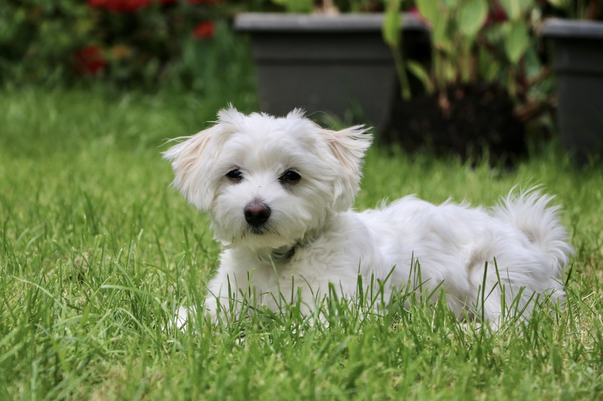

말티즈 키우기 완벽 가이드 — 성격·수명·주의할 질병·관리법

말티즈는 국내에서 가장 많이 기르는 반려견 중 하나입니다. 눈처럼 새하얀 털과 애교 넘치는 성격으로 사랑받지만, 흰 털·작은 체구 때문에 눈물자국과 슬개골 관리에 신경 써야 하는 품종이기도 합니다. 입양 전 꼭 알아야 할 성격, 수명, 질병, 관리법을 정리했습니다.
한눈에 보는 말티즈
| 크기 | 초소형견 (체중 약 2~4kg) |
|---|---|
| 수명 | 약 12~15년 |
| 털빠짐 | 적음 (단, 털이 계속 자라 정기 미용 필요) |
| 활동량 | 낮음 (실내 활동 + 짧은 산책으로 충분) |
| 짖음 | 중간 (경계심으로 짖는 편, 교육 필요) |
| 초보자 적합도 | 높음 |
성격과 기질
말티즈는 보호자에 대한 애착이 매우 강한 품종입니다. 사람을 좋아하고 곁에 붙어 있으려 해서 "껌딱지"라는 별명이 붙을 정도입니다. 영리해서 배변훈련이나 기본 예절 교육도 비교적 잘 따라옵니다.
다만 애착이 강한 만큼 분리불안이 오기 쉽습니다. 혼자 있을 때 짖거나 배변 실수를 한다면 분리불안 신호일 수 있어요. 어릴 때부터 "혼자 있어도 괜찮다"를 가르치는 것이 중요합니다. (강아지 분리불안 완화법 참고) 또 경계심이 있어 초인종·낯선 소리에 짖는 편이라, 짖음 교육도 일찍 시작하면 좋습니다.
입양 전 현실 체크 (비용·시간·주거)
"작으니까 손이 덜 가겠지"라는 기대가 말티즈에서 가장 자주 깨집니다. 체구가 작아 사료값은 적게 들지만, 털이 평생 자라는 품종이라 미용비가 고정 지출로 붙습니다. 아래는 체중 3kg 성견 기준의 감각적인 수치이며, 지역과 병원·미용실에 따라 차이가 큽니다.
| 항목 | 월 예상 | 메모 |
|---|---|---|
| 사료 | 2~3만 원 | 하루 55~80g 수준(사료 열량과 중성화 여부에 따라 달라집니다) |
| 미용 | 3~8만 원 | 4~6주마다 4~8만 원을 월로 나눈 값 |
| 병원·예방 | 3~4만 원 | 접종·심장사상충·연 1회 검진의 월 환산 |
| 패드·간식·소모품 | 2~3만 원 | 실내 배변을 한다면 패드 소모가 꾸준합니다 |
| 합계 | 10~18만 원 | 펫보험을 든다면 월 3~5만 원 추가 |
첫해에는 여기에 기초 접종과 중성화(성별·병원에 따라 대략 20~60만 원)가 한 번에 몰립니다. 또 나이가 들어 치과 처치나 무릎 수술이 필요해지면 한 번에 수백만 원이 나가는 구조라, 펫보험 또는 비상 자금을 미리 잡아두는 편이 마음이 편합니다.
하루에 들어가는 돌봄 시간
빗질 5~10분, 눈가 닦기 아침저녁 각 1~2분, 산책 20~30분, 놀이 10~15분, 양치 2~3분. 합치면 하루 한 시간 남짓입니다. 이 중 빗질과 눈가 관리는 하루 건너뛰면 바로 표가 나는 항목이라 "주말에 몰아서"가 통하지 않는다는 점이 이 품종의 특징이에요.
원룸·아파트에서 키울 수 있을까
활동량이 많지 않아 좁은 집에서도 스트레스가 적습니다. 다만 원룸에서 걸리는 건 넓이가 아니라 바닥과 소리입니다. 강마루나 타일은 발이 미끄러져 무릎에 좋지 않으니 주 동선에 매트가 필요하고, 복도 발소리와 초인종에 반응하는 성향이라 벽이 얇은 건물이라면 짖음 교육을 입양 첫 주부터 시작해야 합니다. 반대로 마당이나 넓은 거실은 필수 조건이 아닙니다.
혼자 두는 시간에 대한 내성
애착이 강한 만큼 이 부분이 약합니다. 성견 기준 하루 6~8시간 정도가 현실적인 상한선이고, 자견은 3~4시간마다 배변과 급여가 필요합니다. 야근이 잦거나 12시간씩 집을 비우는 생활이라면 산책 도우미·돌봄 서비스를 비용 계획에 함께 넣어야 합니다.
주의해야 할 질병
- 슬개골 탈구 — 소형견의 국민 질환. 미끄러운 바닥과 점프가 주범입니다. 말티즈 보호자라면 반드시 알아야 할 1순위 질환이에요. (슬개골 탈구 단계별 대처)
- 눈물자국(유루증) — 흰 털이라 착색이 특히 도드라집니다. 눈물관 이상, 눈 주변 털 자극, 알레르기, 식이 등 원인이 다양해 원인부터 찾아야 합니다.
- 치주 질환 — 작은 입에 치아가 밀집해 치석·치주염이 잘 생깁니다. 어릴 때부터 양치 습관을 들이세요.
- 저혈당 — 특히 어린 자견은 굶으면 저혈당 위험이 큽니다. 끼니를 거르지 않게 관리.
- 심장 질환(승모판 폐쇄부전) — 노령기에 나타날 수 있어 정기 검진이 중요합니다.
소형견이라 슬개골·치아·심장 등 관리 포인트가 분명한 편이라, 펫보험 가입 시 슬개골 보장 여부를 확인해두면 도움이 됩니다.
나이대별 관리 포인트
자견기 (생후 12개월까지)
이 시기 말티즈에서 1순위는 저혈당입니다. 몸집이 워낙 작아 한 끼만 걸러도 기운이 빠지고 비틀거릴 수 있습니다. 하루 3~4회로 나눠 먹이고, 잇몸이 창백해지거나 반응이 둔해지면 지체 없이 병원으로 가야 합니다. 동시에 평생 갈 점프 습관이 이때 만들어져요. 소파에 올라가고 싶어 하면 안아서 올려주기보다 반려견 계단을 놓고 쓰는 법을 가르치는 편이 낫습니다. 생후 6~7개월에 유치가 빠지지 않고 이중으로 남아 있다면, 중성화 수술 때 함께 뽑을지 수의사와 상의하세요.
성견기 (1~7세)
겉으로 가장 멀쩡해 보여서 방심하기 쉬운 구간입니다. 이때 붙잡아야 할 건 체중과 치아 두 가지예요. 3kg인 아이가 300g 찌면 체중의 10%가 늘어난 셈이라 무릎과 심장에 그대로 부담이 됩니다. 한 달에 한 번, 같은 시간 같은 저울로 재서 적어두면 변화가 눈에 보입니다. 양치는 매일이 목표이고 최소 이틀에 한 번은 해주세요. (강아지 양치 습관 들이는 법)
노령기 (8세 이후)
나이 든 말티즈에서 자주 만나는 문제는 심장 판막(승모판 폐쇄부전)과 치아 상실입니다. 집에서 할 수 있는 가장 쓸모 있는 관찰은 잠든 상태에서 1분간 호흡수를 세는 것이에요. 깊이 잠들었는데도 가슴이 오르내리는 횟수가 30회를 꾸준히 넘거나, 마른기침이 늘고 산책 중 자꾸 멈춰 선다면 심장 검진을 받아보시길 권합니다. 8세부터는 6개월~1년 간격으로 혈액검사와 흉부 촬영이 포함된 검진을 받는 것이 조기 발견에 유리합니다.
털 관리와 미용 실전
말티즈 털은 속털이 거의 없는 단일모라 빠지는 양 자체는 적습니다. 문제는 빠진 털이 밖으로 떨어지지 않고 그 자리에 남아 엉킨다는 점이에요. "털 안 빠지는 개"가 오히려 매일 빗어야 하는 개가 되는 이유입니다.
도구와 빗질 방법
슬리커 브러시와 촘촘한 꼬리빗(콤) 두 개면 충분합니다. 요령은 겉만 훑지 않는 것. 털을 손으로 층층이 갈라 뿌리 쪽부터 빗어 내리는 방식이라야 속에서 자라는 엉킴을 잡을 수 있습니다. 마무리로 콤이 뿌리까지 걸림 없이 지나가면 성공이에요.
특히 잘 엉키는 부위
- 귀 뒤쪽 — 가장 먼저 뭉치는 자리. 며칠만 놓쳐도 판처럼 굳습니다.
- 겨드랑이와 뒷다리 안쪽 — 마찰이 심한 곳. 하네스를 자주 채운다면 매일 확인하세요.
- 턱 밑과 가슴 — 물그릇에 젖었다 마르기를 반복하는 부위입니다.
- 항문 주변과 꼬리 밑동 — 위생 문제로 바로 이어집니다.
목욕과 미용 주기
목욕은 2~3주에 한 번이면 충분하고, 결과는 횟수보다 말리는 과정에서 갈립니다. 수건으로만 닦고 자연 건조를 시키면 겨드랑이·발가락 사이·귀 안쪽에 습기가 남아 냄새와 피부 트러블로 이어져요. 드라이어 바람을 쐬면서 동시에 빗질을 해야 털이 눌리지 않고 엉킴도 같이 풀립니다. 미용실은 4~6주 간격이 일반적이고 비용은 대략 4~8만 원선인데, 엉킴이 심하면 추가 요금이 붙거나 짧게 미는 것 말고는 방법이 없어집니다.
일상 관리 (식이·운동)
식이 관리
체구가 작아 조금만 과식해도 비만이 되기 쉽습니다. 적정 급여량을 사료 급여량 계산기로 확인하고, 간식은 하루 칼로리의 10% 이내로 제한하세요. 눈물자국이 심하면 사료를 바꿔보는 것도 방법입니다.
운동
실내 활동만으로도 상당한 운동량이 채워지지만, 하루 20~30분 산책은 정신 건강에 좋습니다. 슬개골 보호를 위해 소파·침대 점프는 막고 미끄럼방지 매트를 깔아주세요.
초보 보호자가 자주 하는 실수
- 겉털만 빗고 빗질을 끝냈다고 생각하기 — 슬리커로 표면만 쓸면 손에 닿는 감촉은 부드러운데 속은 이미 뭉쳐 있습니다. 미용실에서 "엉켜서 밀 수밖에 없다"는 말을 듣는 대부분이 여기서 시작돼요. 빗질을 마친 뒤 콤이 뿌리까지 통과하는지 확인하세요.
- 목욕 후 수건만 쓰고 자연 건조 — 흰 털이 누렇게 변하고 쉰내가 나는 흔한 원인입니다. 특히 귀 안쪽에 물기가 남으면 귀 질환으로 번질 수 있으니, 귀를 자주 긁거나 머리를 흔들면 진료를 받아보세요. (강아지 외이염 신호)
- 눈물자국을 사료 탓으로만 돌리기 — 식이가 원인일 때도 있지만 속눈썹이 눈을 찌르거나 눈물길이 막힌 구조적 문제일 수도 있습니다. 사료를 바꿔도 그대로이거나 눈을 자주 찡그리고 앞발로 비빈다면 안과 검진이 먼저입니다.
- 짖을 때 안아서 달래기 — 가볍다 보니 반사적으로 안아 올리게 되는데, 개 입장에서는 "짖으면 안아준다"로 정리됩니다. 짖음이 멎은 뒤 조용한 순간에 관심을 주는 순서로 바꿔야 합니다.
훈련과 사회화 포인트
말티즈는 보호자의 표정과 목소리 톤을 예민하게 읽습니다. 그래서 칭찬과 간식으로 알려주는 방식에 아주 빠르게 반응하는 대신, 큰 소리로 혼내면 겁을 먹고 학습 자체가 멈춰버립니다. 잘 안 될 때는 강도를 높일 게 아니라 난이도를 낮춰야 합니다.
배변 훈련은 길게 보기
방광이 작아 자견기에는 참는 시간 자체가 짧습니다. 실수를 혼내면 "보호자 앞에서 싸면 안 된다"로 잘못 배워 소파 뒤나 구석에 숨어서 하게 돼요. 성공했을 때 바로 칭찬하는 쪽으로만 밀고 가는 편이 결국 빠릅니다. (배변 훈련 단계별 방법)
혼자 있기 연습
이 품종 훈련에서 가장 중요한 항목입니다. 나가는 시늉만 하고 30초 뒤 돌아오기부터 시작해 5분, 15분, 30분으로 늘려가고, 나갈 때와 들어올 때 인사를 크게 하지 않는 것이 요령이에요. 열쇠 소리나 신발 신는 동작을 평소에도 의미 없이 반복해두면 "출발 신호"에 붙은 긴장이 옅어집니다.
만지는 것에 익숙해지기
평생 4~6주마다 미용실에 가고 매일 눈가와 발을 만져야 하는 품종입니다. 자견기부터 발 만지기, 귀 젖히기, 입 열기를 간식과 짝지어 하루 30초씩 연습해두면 성견이 된 뒤 미용도 진료도 훨씬 수월해집니다.
이런 분께 잘 맞아요
- 실내 위주로 생활하며 작은 반려견을 원하는 분
- 매일 빗질·미용 관리에 시간을 낼 수 있는 분
- 집에 함께 있는 시간이 많은 분 (분리불안 예방에 유리)
반대로 장시간 집을 비우는 경우가 많다면, 분리불안 예방을 위한 준비와 훈련이 꼭 필요합니다.
자주 묻는 질문 (FAQ)
Q. 말티즈 수명은 얼마나 되나요?
보통 12~15년으로 소형견 중 장수하는 편입니다. 치아·심장·체중 관리를 잘하면 더 오래 건강하게 지낼 수 있습니다.
Q. 눈물자국은 없앨 수 있나요?
원인(눈물관 이상, 자극, 알레르기, 식이 등)에 따라 다릅니다. 눈 주변 털 관리와 매일 닦아주기로 완화되며, 지속되면 안과 검진을 받아 원인을 확인하세요.
Q. 짖음이 심한데 어떻게 하나요?
말티즈는 경계심으로 짖는 편입니다. 짖는 상황을 파악하고, 짖지 않을 때 보상하는 방식으로 어릴 때부터 교육하면 개선됩니다. 혼내는 방식은 역효과가 나기 쉽습니다.